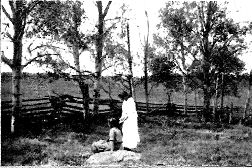
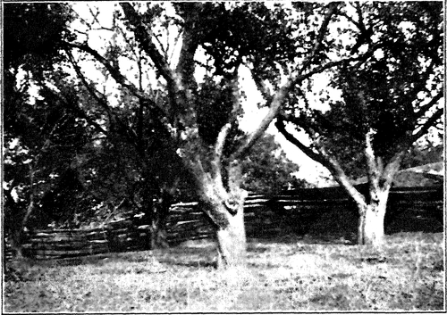

The Art Of Grouping. Part 2
Description
This section is from the book "The Natural Style In Landscape Gardening", by Frank A. Waugh. Also available from Amazon: The Natural Style in Landscape Gardening.
The Art Of Grouping. Part 2
Another good reason, however, for the success of these larger groups lies in the fact that they offer much wider possibilities in detailed composition. There is much less danger of falling into one stiff, set grouping.
Since groups of this moderate size have such special value in landscape composition we may properly dwell somewhat longer on the problems connected with their development.
Thus far we have assumed that each group is to be composed of plants all alike—all of the same species and variety. In groups of less than five, this is almost obligatory, but in larger units there is no such necessity. While there is no limit to the number of plants which may reasonably be used in a pure group, there should be no prejudice against the mixed group. The mixed group has abundant prototypes in nature. When properly composed it is wholly agreeable to the eye.
A few very simple rules may be given for making up groups of this kind. The following suggestions seem safe.
1. Do not use too many species. Two or three are usually more effective than more would be. (The law of simplicity).
2. One species should dominate the group, the others being obviously subordinate. (The law of dominance).
3. The species must harmonize, especially in color, form and habit of growth. (The law of harmony).
4. They must be socially compatible. (The law of ecology).
5. They must all be adapted to the local conditions of soil, drainage, light, etc. (The law of adaptation).
The row of trees is commonly excluded from all naturalistic planting, or is admitted only under protest. The row is obviously artificial and so contradicts flatly the feeling which the landscape gardener is often trying to establish, i. e., the feeling that here nature has had her own way. It is quite plain that the tree row is outside the forms of nature and may even break seriously upon the spirit of naturalistic work.
All this may be granted, and yet the tree row not wholly abolished. There are many places where the natural style may be appropriately adopted yet where the illusion of the uninhabited wilderness can never be attained. Large and obvious compromises with civilization may be made without vitiating entirely the naturalistic method. Straight streets and long architectural lines are common elements in our practical landscape problems; and they are elements to be met frankly and honestly. Along such lines the formal row of trees always has charm, dignity, beauty. It is by no means always necessary, therefore, to exclude such objects of charm, dignity and beauty from every composition on the ground of their essential unnaturalness, especially after the compromise has already been forced from another quarter.
What is true of the formal tree row will be even more readily admitted in the matter of the informal row. In all the regions of the Old World where men have lived long and numerously, and in those parts of America which have approached the same conditions, we find the informal irregular tree row a very common unit in the landscape. Such ragged rows represent the borders of old fields, old fence lines, the position of lost roads or of property divisions. As a rule they are picturesque and pleasing—often extremely so. Look on the paintings in the art gallery and see how frequently their beauty has moved the artist's brush. It would be folly to reject from our landscape gardening a unit of such approved power. We are not even justified in excluding it from the natural style, for indeed these picturesque tree borders do not fit any better, nor half so well, into any formal gardening.
If we are able to adopt—as we surely shall be within the next century—the agricultural landscape more fully into our feeling for nature we shall be less sensitive about the unnaturalness of these informal rows of trees and shrubbery. The agricultural landscape is in reality one of the great topographical types, and one which we must learn to appreciate more highly.
Mass planting is a comparatively new discovery in landscape gardening and marks one of the greatest advances yet made toward a genuinely naturalistic style. The use of trees by the thousands for screens or backgrounds, the introduction of rhododendrons by carloads for underplanting, the development of considerable forest tracts as elements in pictorial landscape treatment, these are all good examples of mass planting. We may have mass effects on a much smaller scale than this, however. Without splitting hairs we may define a mass as a group of such extent that its limits are not all visible from some chosen point of view.
Mass plantings are of two kinds, pure and mixed. Pure masses are composed of a single species or variety, mixed masses of several. The usual continuous border planting follows the mass structure.
The social group will usually be a mass planting, though some of the large groups, containing a dozen or more individuals, may be constructed on the social principle. This social or ecological principle is discussed at greater length elsewhere (see page 51) so that for the present we need only call attention to it as one of the methods of group composition.
Having now considered the various types of groups from the structural standpoint it is important to discuss the relation of the group to the larger elements of landscape structure and to other principles of composition.
It must be pointed out first of all that these various groups are all perfectly natural forms. Nature uses all these groupings. It is possible, as all of us sadly realize, to construct any of these groupings in a very unnatural and artificial manner; but it is possible also, no matter how difficult it may be, to present them in a perfectly naturalistic and agreeable character. In fact, the grouping of plants is one of the first principles in nature's own methods of distribution. In a word, good grouping is absolutely essential to the natural style.
Continue to: